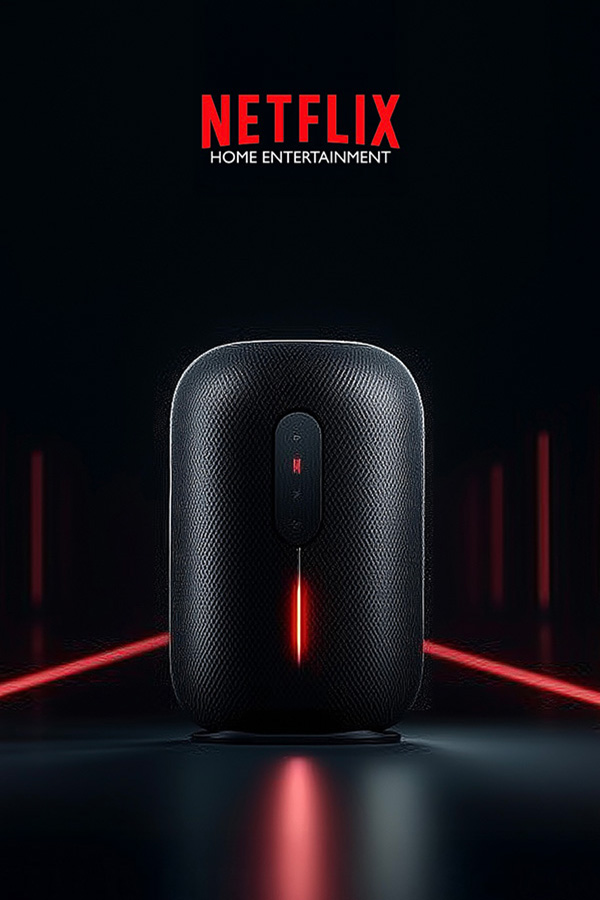
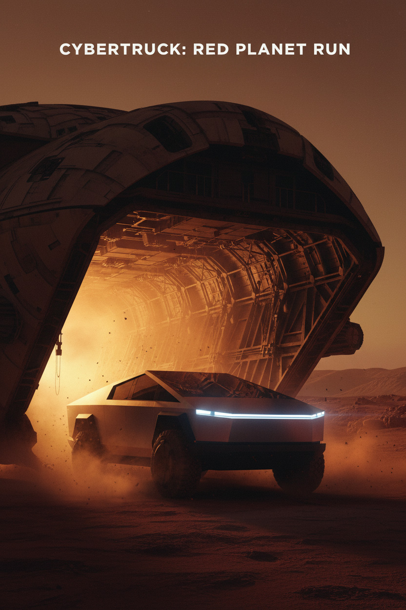
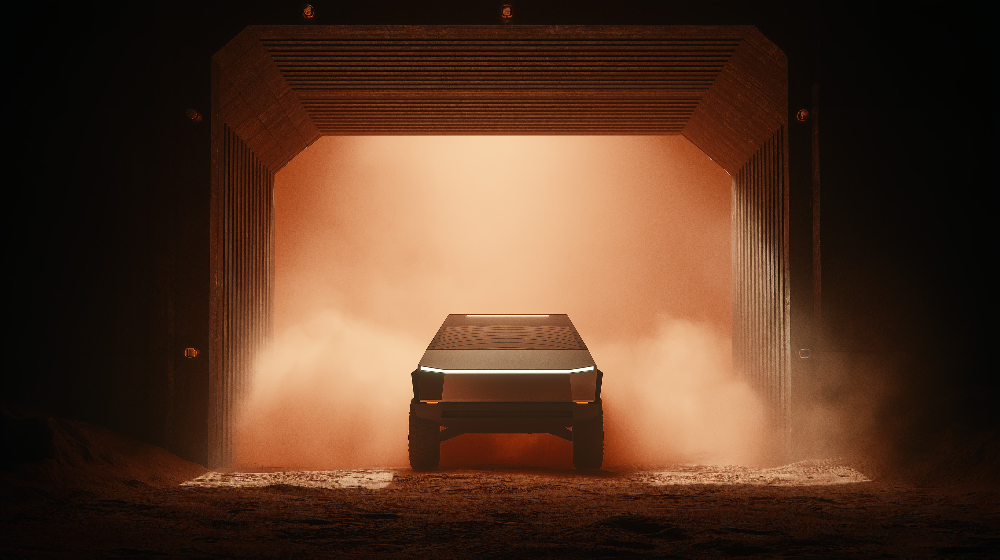
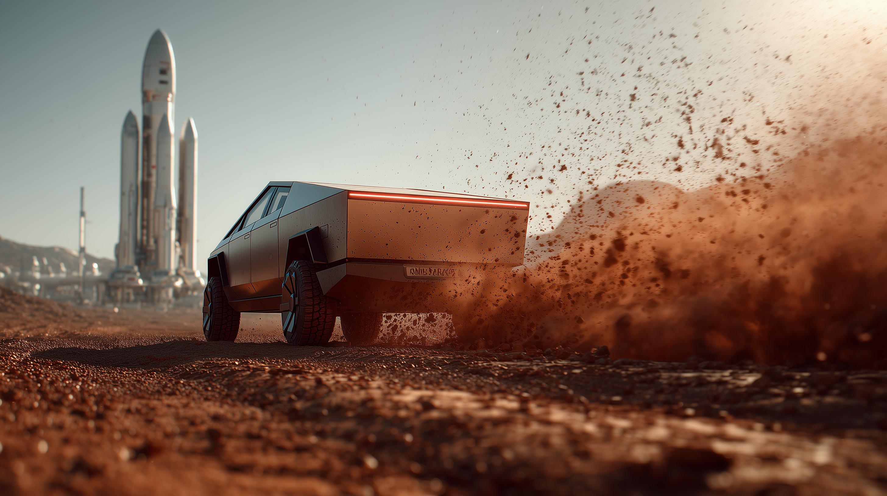
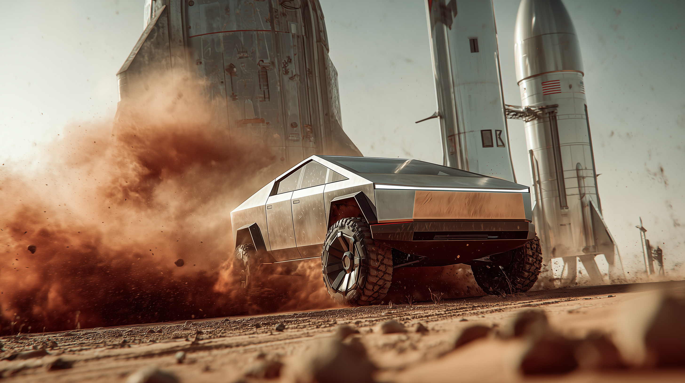
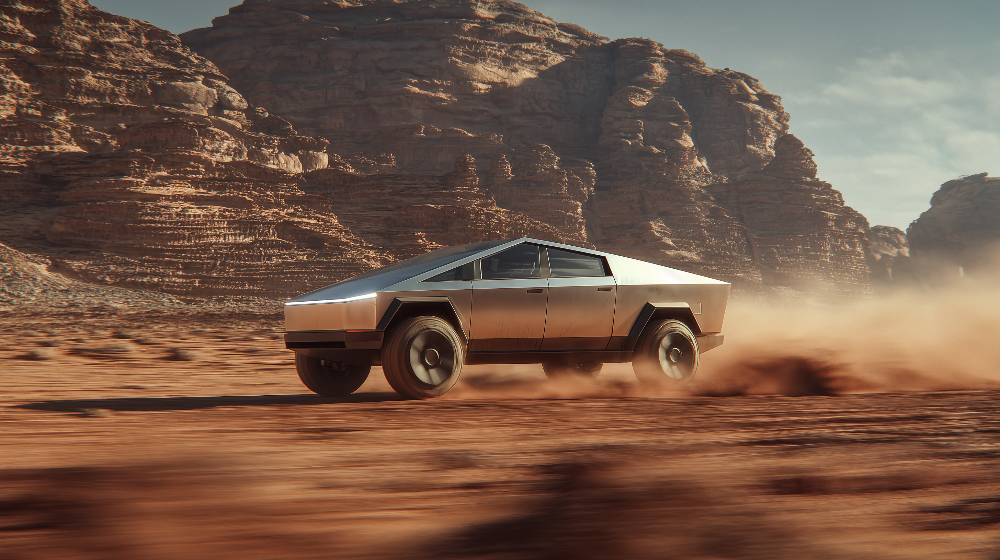
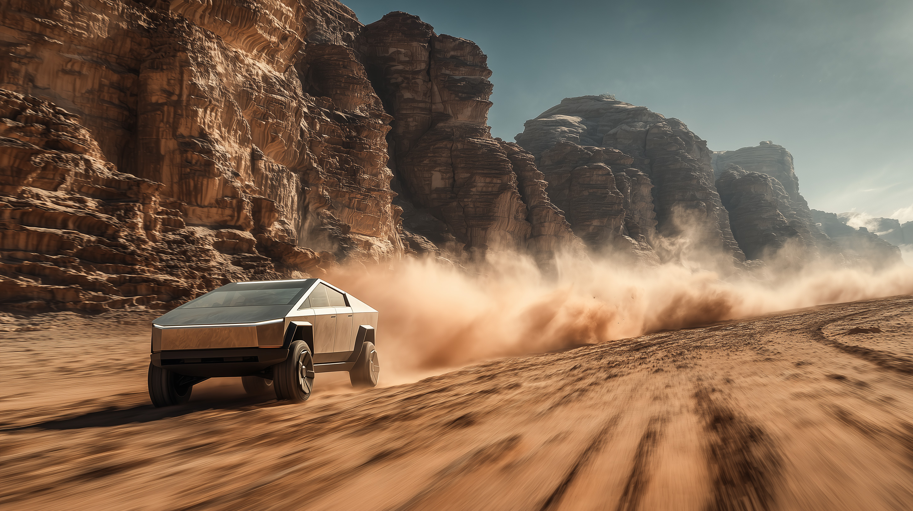
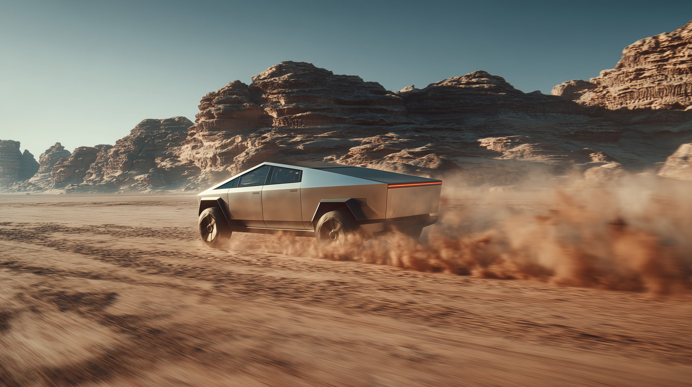
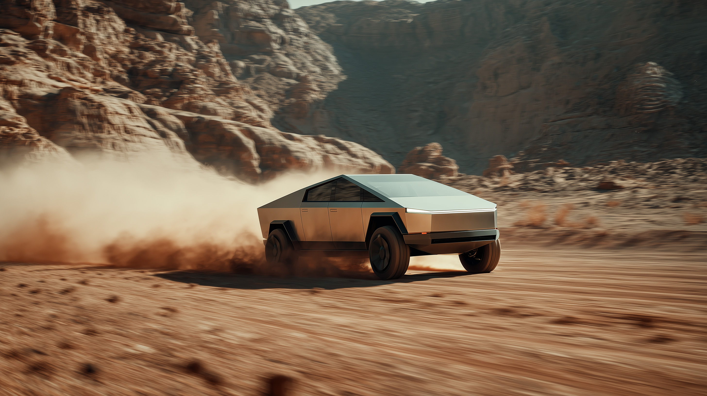

Selected AI work / 2025—2026
Images that
learn to move.
Steven Chen builds visual worlds across generative image, AI filmmaking, brand storytelling, and interactive experiments. The work starts with cinema: light, rhythm, character, and a reason for every frame.
01 / AI Video
From Prompt to Motion
A compact look inside an image-to-video workflow: prompt, visual exploration, motion refinement, and the final cinematic shot.

02 / AI Concept Film
Feel Every Stories
An experimental film that visualizes sound as a journey through water, sand, light, and the deep ocean—returning to a single line of energy and revealing a speaker engineered from the inside out.
03 / AI Cinematic World
Cybertruck: Mars
A vehicle reveal reframed as an interplanetary odyssey through dust, industrial ruins, and imagined future colonies.








04 / Interactive AI World
LEGO World: Self-Portrait
A creator moves through worlds made from pixels, building blocks, and memories—crossing from cinema into simulation and from reality into imagination.
Creative practice